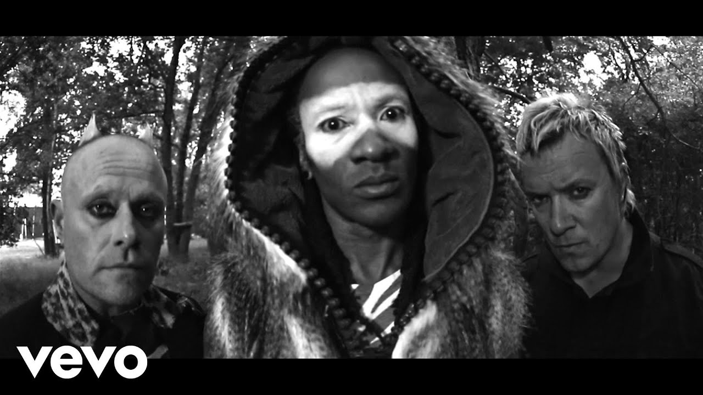

«The Prodigy» — британський культовий проект електронної музики. Їхня музика охоплює різні стилі: від рейву на початку 1990-х до денсу, альтернативного року і біг-біту з елементами панкового вокалу в пізніший період. Класичний склад гурту утворювали троє музикантів — композитор Ліам Гаулетт та вокалісти Кіт Флінт і Максим.[1] З 1990 по 2000 в гурті також працював танцюрист Лірой Торнхілл, а в ранні роки також вокалістка і танцюристка Шаркі. В березні 2019 Кіт Флінт наклав на себе руки.l¬l The Prodigy розпочинали з андеграундової сцени рейву, але вже незабаром досягли світової слави. Найвідомішими композиціями вважаються: «Out Of Space», «Smack My Bitch Up», «No Good (Start The Dance)», «Breathe», «Firestarter», «Poison» та «Voodoo People».

The Prodigy дебютували міні-альбомом What Evil Lurks, але популярність їм приніс синґл Charly, що дістався до третього місця на британському хіт-списку. Їхній дебютний альбом Experience був випущений в 1992 році. Він був 12-й в списку найбільш продаваних альбомів у Великій Британії.[1] Після наступного альбому гурту Music For The Jilted Generation, випущеного в 1994 році, тижневик New Musical Express називав Гоулета «Робокопом і Бетховеном в одній особі». Альбом зламав комерційний успіх свого попередника, гурт став зіркою MTV. Альбом був натхненний, зокрема спротивом щодо законів у Великій Британії, що криміналізували рейв-заходи. Найбільший комерційний успіх здобув третій альбом The Fat Of The Land (1997) з хітами Firestarter, Breathe і контроверсійним Smack My Bitch Up. В США його видав лейбл Мадонни — Maverick. Після кількох років активності гурт зійшов з музичної сцени. У 1999 році Ліам Гоулет випустив сольний альбом The Dirtchamber Sessions Volume One, сольними виступами зайнялися також інші учасники гурту, щоправда без особливого успіху. У 2000 році гурт покинув Лірой Торнгілл. У 2002 році вийшов синґл Baby's Got Temper, який був предвісником нового альбому, прем'єра якого відкладалася. Лише в 2004 році відбувся реліз альбому Always Outnumbered, Never Outgunned, а серед гостей на запису були зокрема Ліам і Ноел Галлахер з Oasis (Shootdown), актриса Джульєтт Льюїс (Hotride), Кул Кіф (Kool Keith), Прінцес Суперстар (Princess Superstar) і Твіста (Twista). Проте, альбом не досяг великого успіху. Діяльність гурту в 1990-ті підсумувала компіляція Their Law: The Singles 1990—2005, що містить найвідоміші хіти The Prodigy. 23 лютого 2009 року гурт випустив новий альбом під назвою Invaders Must Die. Шостий студійний альбом під назвою The Day Is My Enemy The Prodigy випустили 30 березня 2015 року. 2 листопада 2018 року гурт випустив сьомий студійний альбом під назвою «No Tourists».[2] 4 березня 2019 стало відомо, що Кіт Флінт наклав на себе руки[3]. В серпні 2019 року Хіам Хаулетт заявив, що працює над новим альбомом The Prodigy.[4]
